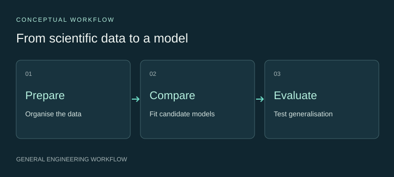

Scientific ML & surrogate modelling
Python workflows for scientific data preparation, regression, model comparison and simulation integration.
Turn discrete data into a usable model.
Simulation and measurement workflows produce observations at selected conditions. A surrogate model provides a computational representation that can be queried in a wider analysis workflow.
The task includes organising the data, choosing candidate models and deciding how to evaluate them for their intended use.
Compare models within a consistent workflow.

My implementation
I developed Python data-processing and regression workflows, compared Ridge regression, Gaussian processes, Extra Trees and XGBoost, and worked on transferring fitted material models into simulation calculations.
- Prepare traceable analysis tables with explicit variable definitions and units.
- Use consistent preprocessing and evaluation when comparing estimators.
- Export model representations for use in scientific-computing workflows.
Match the test to the intended prediction.
Grouped cross-validation keeps related observations together. Held-out tests provide a separate view of model behaviour under selected unseen conditions. The split design should reflect how a model will be used.
I also consider unit consistency, interpolation behaviour, domain limits and agreement between software representations when a model crosses an interface.
Combine statistical modelling and engineering context.
This work developed my skills in regression, leakage-aware validation and scientific-software integration. It supports practical model comparison and clear communication of where a surrogate is appropriate.
Explore scientific data workflows ↗Selected findings from this doctoral research are currently being prepared for academic publication. Detailed results are therefore not publicly presented at this stage.